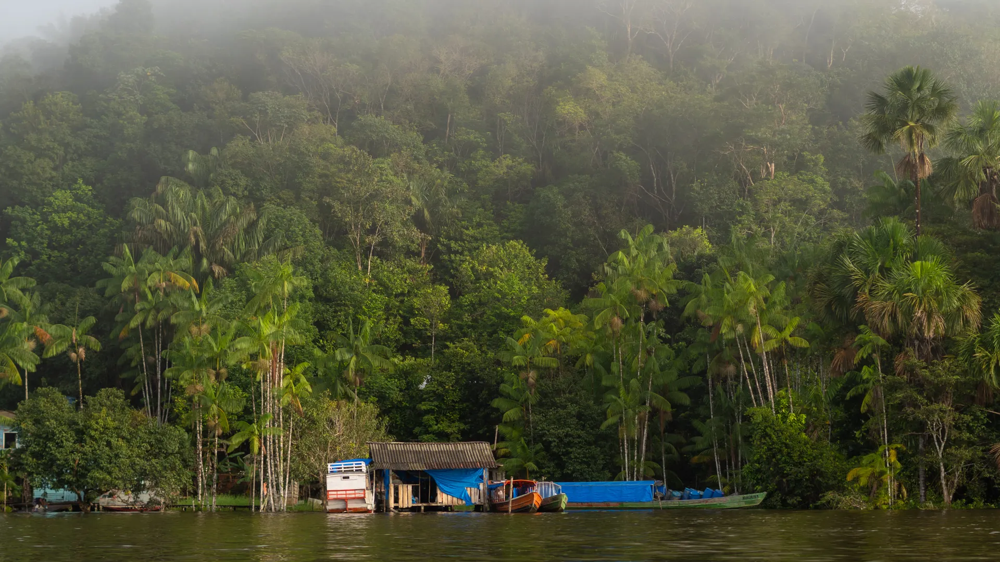

Se anticipa una buena temporada para la pesca del dorado en la costa del Paraná
Pescadores de la zona esperan con expectativa el inicio de la temporada, un clásico que todos los años atrae visitantes a la costa de Itá Ibaté y alrededores.
Leer másPrensa y contenidos de Itá Ibaté y la región
PRENSA Y CONTENIDOS DIGITALES
Actualidad local, provincial, nacional y deportes, contados por quienes conocen el territorio.
Portada
Pescadores de la zona esperan con expectativa el inicio de la temporada, un clásico que todos los años atrae visitantes a la costa de Itá Ibaté y alrededores.
Leer másItá Ibaté
y la región
Locales, provincia
y deportes
Al instante,
todos los días
Contacto directo
por WhatsApp
CÓMO TRABAJAMOS
QUÉ CUBRIMOS
Lo que pasa en Itá Ibaté: gobierno municipal, comunidad y vida de pueblo.
La actualidad de las localidades vecinas — Berón de Astrada, Lomas de Vallejos, San Cosme y más.
Los hechos de alcance nacional que también importan acá.
Los campeonatos y clubes de la región, de cerca.
SOBRE NOSOTROS
La actualidad más importante es la que pasa cerca.
El Muelle Digital es un medio de prensa dedicado a contar lo que pasa en Itá Ibaté y las localidades vecinas de Corrientes — desde las decisiones del gobierno municipal hasta los festejos que hacen a la vida de cada pueblo.
Creemos que estar cerca del territorio es la única forma de contarlo bien.

HABLEMOS
Escribinos por WhatsApp — te respondemos directamente.
Escribir por WhatsApp